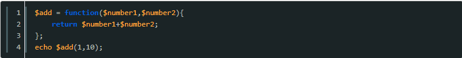
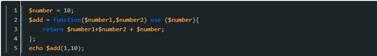
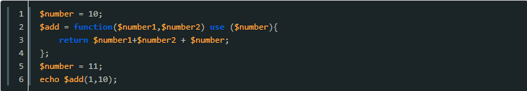
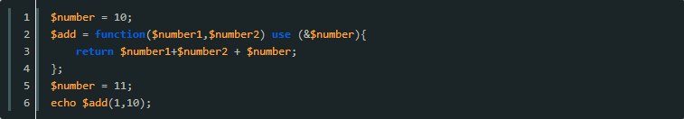
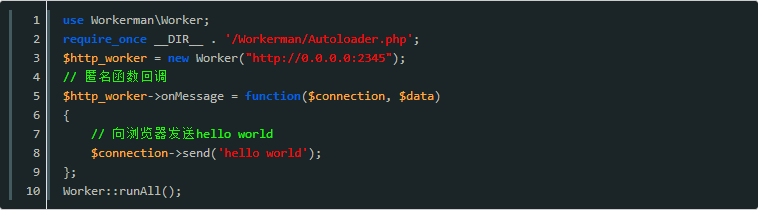
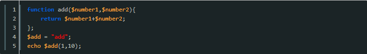
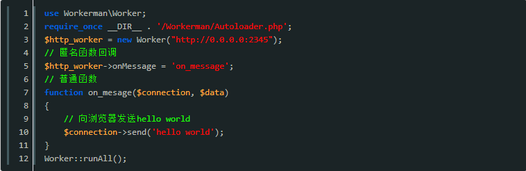
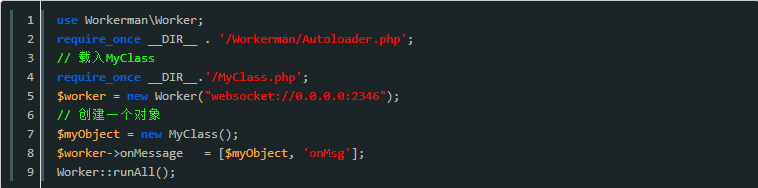
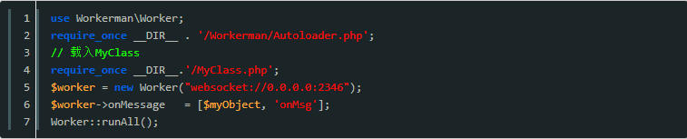

在workerman中会经常使用，我们先写一个回调函数，当某个行为被触发后使用该函数处理相关逻辑。
在PHP中最常用的几种回调写法如下
匿名函数做为回调
匿名函数（Anonymous functions），也叫闭包函数（closures），允许临时创建一个没有指定名称的函数。最经常用作回调函数（callback）参数的值。当然，也有其它应用的情况。
匿名函数的回调经常将其赋给一个变量（或一个对象的属性）

最终结果会输出11。
这中间有一个use的用法，现在很多框架都在使用，包括我自己发布的 yii2-wx 在处理微信付款结果通知的时候也有用到。
简单点说就是当我们设置了匿名函数的时候，可以从父作用域继承变量，比如如下代码

则结果是21，没错，匿名函数体可以使用继承过来的变量 $number。
一点要注意的是，这种继承是在函数被定义的时候就确定了，比如如下代码

结果还是21，后面重新的赋值并没有起到作用。
那我们如何解决这个问题那？
@nai8@
只需要将继承的变量设置为引用即可，如下

搞定了，22出现了。1 + 10 + 11;
在workerman中一般匿名函数作为回调用法如下

普通函数作为回调
这种用法并没有什么可以多说的，不像匿名函数那么多细节，直接看代码。

在这里没有use用法，并且函数定义和赋值给变量顺序谁上谁下都可以，在语法上这只是对add的一次变量赋值，之所以能作为回调是我们使用了add() 导致的，在workerman中一般用法如下

类方法作为回调
学习了前面的知识，类的方法作为回调就好学了，一句话：将一个类的公共方法作为回调函数;
直接上在workerman中的用法

我们将MyClass的onMsg方法作为回调赋值给$worker->onMessage。
类静态方法做为回调
这个最简单了，看代码。

我们将MyClass的静态方法onMsg方法作为回调赋值给worker->onMessage，因为是静态方法，在onMsg内不能用this哈。
以上就是学习workerman之前需要知道的几种php回调写法的详细内容
有需要学习交流的友人请加入Swoole交流群的咱们一起，有问题一起交流，一起进步！前提是你是学技术的。感谢阅读！
点此加入该群